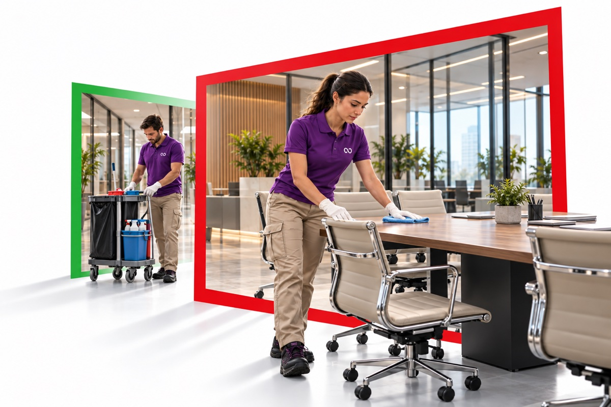

Target di esecuzione
Consuntivo da acquisireCdP Control HUB
Ogni giorno,
la cura dei vostri spazi.
Persone, attività e qualità del servizio.
Una visione condivisa per le sedi CDP.

IL SERVIZIO, VICINO A TEAttenzione agli ambienti.
Continuità nelle attività.
Continuità nelle attività.
AMBITO OPERATIVO E SEDIPiù vicini al servizio.
Più vicini al servizio.
La tua sede, in una visione.
Seleziona l’ambito operativo e la sede CDP per consultare attività, risorse e indicatori del servizio.
INDICATORI DEL SERVIZIOLa qualità del servizio,
La qualità del servizio,
in numeri.
Una fascia di indicatori dedicata al controllo degli obiettivi del servizio: esecuzione delle attività, monte ore, qualità e tempi di risposta.
OBIETTIVI E LIVELLI DI SERVIZIOEsecuzione, qualità e tempi di risposta
Ore erogate / previste
Rilevazione per sedeSoglia di penalità: IQp < 0,7
Controllo mensile · dato da acquisireTempo SLA di intervento
Nelle sedi con presidioSLA in ore lavorative
Consuntivo da acquisireLE ATTIVITÀ
Le attività del servizio
Programmazione, continuità e interventi a richiesta.
IL CONTROLLO DEL SERVIZIO
Monitoraggio e controllo del servizio
Informazioni operative, indicatori di qualità e conformità dei servizi erogati presso le sedi CDP.
Anteprima del servizio: indicatori consuntivi, registrazioni e documenti operativi da acquisire. I controlli IQp e il report di qualità hanno periodicità mensile.
LE SEDI CDPUna rete di spazi.
Una rete di spazi.
Un servizio coordinato.
Il perimetro delle sedi e delle superfici del servizio.
56.802 m² complessivi del servizio